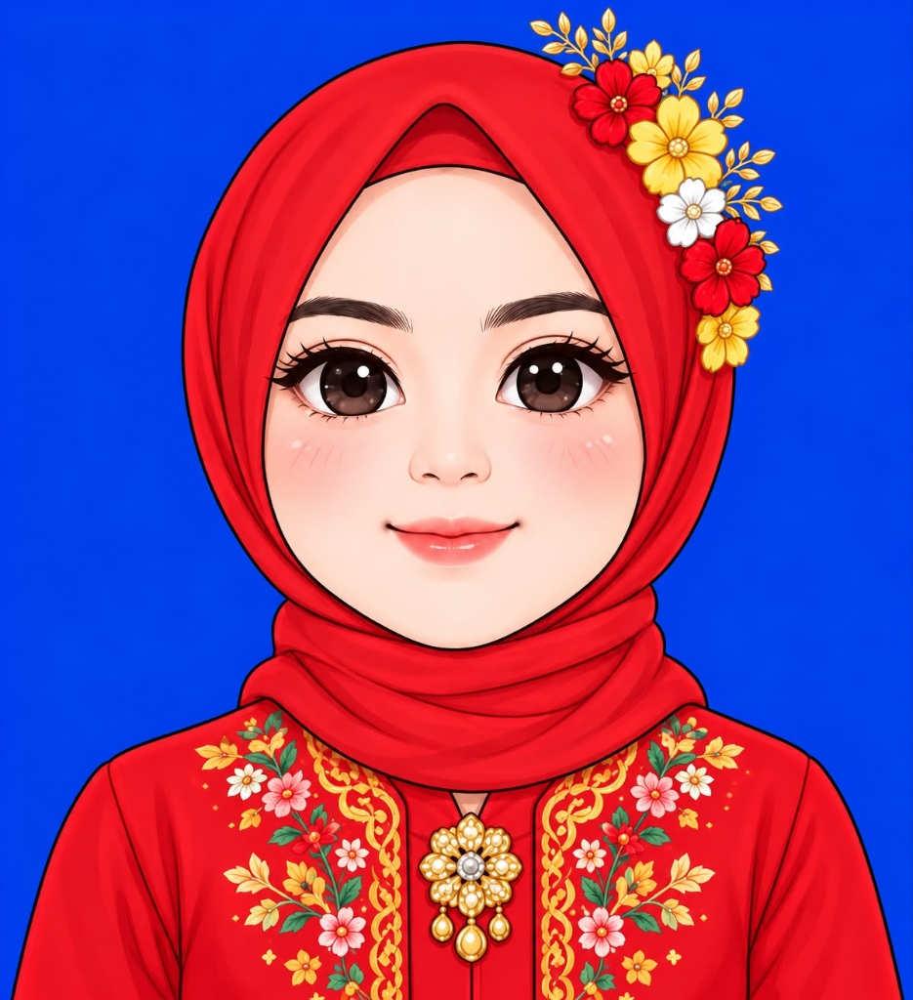

The Wedding Of
Sabtu, 09 Januari 2027
Kepada Yth;
Bapak/Ibu/Saudara/i
Dengan memohon rahmat dan ridho Allah Subhanahu Wa Ta'ala, kami bermaksud menyelenggarakan syukuran pernikahan putra-putri kami:
Rianzani Octavia
&
Tazky Bagus Ananda
Merupakan suatu kehormatan dan kebahagiaan bagi kami apabila Bapak/Ibu/Saudara/i berkenan hadir untuk memberikan doa restu.
"Dan di antara tanda-tanda (kebesaran)-Nya ialah Dia menciptakan pasangan-pasangan untukmu dari jenismu sendiri, agar kamu cenderung dan merasa tenteram kepadanya, dan Dia menjadikan di antaramu rasa kasih dan sayang."
Hitung Mundur Hari Bahagia
Pengantin

(Zani)
Putri Tercinta dari:
Bapak Ridwansyah & Ibu Nunung
(Tazky)
Putra Tercinta dari:
Bapak Azmat Muzakir (Alm) & Ibu Tuti Imriti (Almh)
Waktu & Tempat
08.00 WIB - Selesai
Gelanggang Remaja Tebet (Jl. Tebet Timur Dalam III No.15)
11.00 WIB - 14.00 WIB
Gelanggang Remaja Tebet (Jl. Tebet Timur Dalam III No.15)
Tanda Kasih
8692150502
a.n Rianzani Octavia
053401027951500
a.n Tazky Bagus Ananda
Jalan Lontar/Gang Belimbing RT.04 RW.03 No.12, Lenteng Agung, Jagakarsa, Jakarta Selatan 12610
Buku Tamu
"Selamat menempuh hidup baru mpok Zani & bang Tazky! Samawa selalu."
"Lancar sampai hari H brader! Berkah pernikahannya."